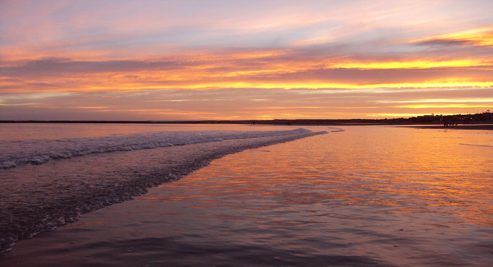
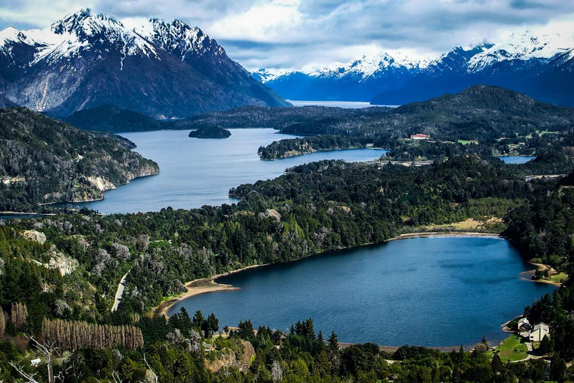
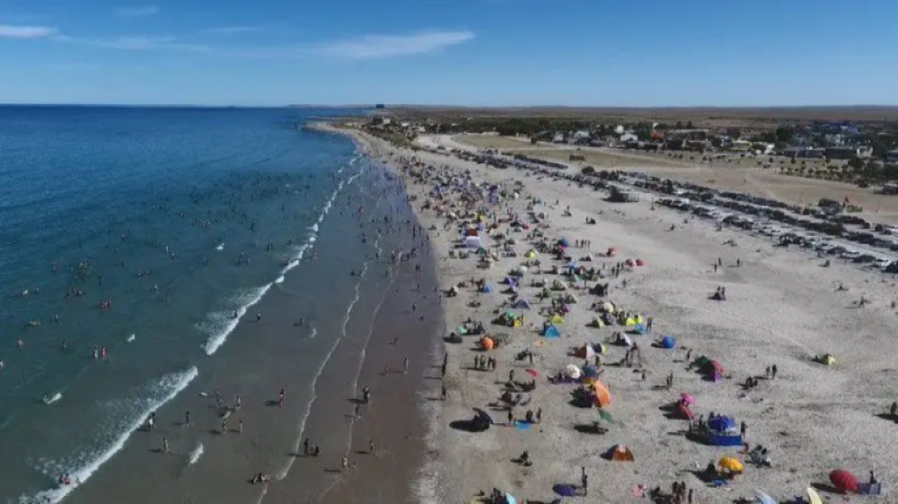

RIO NEGRO
Río Negro es una provincia en el norte de la Patagonia argentina. Sus paisajes naturales incluyen desde la nevada Cordillera de los Andes en el oeste hasta el océano Atlántico en el este, y se destacan los lagos glaciales y mesetas con bosques. La ciudad de Bariloche, que se encuentra a los pies de los Andes en el Parque Nacional Nahuel Huapi, es conocida por sus playas de piedras, el chocolate casero y el área de esquí en el cerro Catedral.
Si hay un lugar para soñar y sentirse como en un cuento de hadas esa es la provincia de Río Negro, ubicada en plena Patagonia argentina y con fabulosos destinos turísticos.
En tu recorrido por Río Negro te darás cuenta de que este lugar es una verdadera invitación a disfrutar de la naturaleza, pues encontrarás de todo en un solo lugar: montañas, ríos y playas. Se trata de ese espacio que invita al turista a vivir una experiencia única y sin igual en Argentina.
A continuación, descubre cuáles son algunos lugares que no te puedes perder cuando visites Río Negro.
Las Grutas
Las Grutas están específicamente en el Golfo San Matías, justo donde está la costa Atlántica. Para llegar hasta este lugar puedes tomar la Ruta Nacional N°3 o también a través de la Ruta Provincial N°251 desde el sur por la Ruta Nacional N°3 o desde el oeste por la Ruta N°2.
Al llegar a Las Grutas te darás cuenta de que puedes tomar un delicioso baño en su magnífica zona costera, ideal para el disfrute de grandes y chicos. Las Grutas se caracterizan por sus playas llenas de cuevas que dan nombre al lugar, haciéndolo un atractivo turístico imperdible durante tu visita a Río Negro.
Igualmente te encontrarás con un lugar que tiene todo lo necesario para pasarla bien, porque en él hay una oferta turística y hotelera que ofrece solo ventajas a los turistas. De Río Negro también te sorprenderá gratamente su rica gastronomía, la cual consiste en una variedad de pescados y mariscos, entre otros.
Parque Nacional Nahuel Huapi
Se trata del Parque Nacional más antiguo de Argentina, decretado como tal en el año 1903, lo que, por supuesto, lo convierte en una visita obligada si vacacionas en Río Negro. Este parque, conformado por unas 705.000 hectáreas, se encuentra entre las provincias de Neuquén y Río Negro, por lo que es imposible que no forme parte de este ranking.
Son varias las actividades que puedes realizar durante tu paseo por el parque Nahuel Huapi y lo mejor es que es posible acceder a estas a través tours o también por cuenta propia. Solo debes tener ganas de conocer los senderos de este parque nacional a través de caminatas, paseos a caballo o en los tours.
Por último, cuando ingreses al parque te encontrarás con pequeños lugares que debes visitar sí o sí. Los más resaltantes son el Bosque de Arrayanes, el Río Lima y Valle Encantado, Puerto Blest, el Lago Mascardi y el Cerro Tronador.
El Bolsón
Llegar a El Bolsón es muy fácil, pues lo puedes hacer a través de las rutas 258 o 40, ambas nacionales, aunque también a través de tours saliendo desde Bariloche.

El Bolsón se ubica en las faldas del cerro Piltriquitrón, en las cercanías del río Quemquemtreu. Uno de los atractivos que más llama la atención es el Cerro, una increíble montaña que por su ubicación da la impresión de siempre estar protegiendo al pueblo. Por si fuera poco, se puede ver desde cualquier lugar. Hay varias maneras de ascender a la montaña, pero va a depender de hasta dónde desees llegar. No olvides que, caminando o en auto, ambas formas son válidas cuando se trata de aventurarte a conocer este cerro.
Muy importante, no olvides recorrer las ferias artesanales de El Bolsón, pues sus artesanías son las más bellas e interesantes de toda Argentina. Tampoco olvides la Fiesta Nacional del Lúpulo. En ella podrás probar variedad de cervezas artesanales y conocer las costumbres y tradiciones de los lugareños.
Cajón Azul
En el pueblo de El Bolsón está el Cajón Azul, un lugar imperdible si visitas Río Negro. Si además eres amante del montañismo, este es un lugar que no te puedes perder.

El Cajón Azul es un hermoso río al que llegas después de un recorrido de cuatro horas aproximadamente. El recorrido se compone de algunas zonas empinadas, pero que bien valen la pena, porque al llegar el turquesa de las aguas así te lo confirmará. Así que te animamos a conectar con la naturaleza y disfrutar de este fabuloso espacio.
Bariloche
Bariloche tal vez sea uno de los lugares más conocidos de toda Argentina, pues turistas de todas partes del mundo lo visitan cada año y con razón. Esta ciudad, además de ser la Capital Nacional del Turismo de Aventura, también es la Capital Nacional del Chocolate. Dos interesantes denominaciones que no hacen más que llamar la atención de los extranjeros que llegan a Río Negro.
.jpg)
En Bariloche podrás apreciar bosques de más de mil años, así como hermosas montañas y lagos que, sin importar la época del año, brindan todo su esplendor. También es posible aprovechar y esquiar en uno de los mejores centros de esquí de América del Sur, viajar en teleférico o visitar la Colonia Suiza. Tu llegada a este lugar será el inicio de una aventura tras otra.
Playas Doradas
Si lo que quieres es playa, sol y arena, Playas doradas, una vasta extensión de playas rionegrinas, se convertirán en tu opción ideal. Pese a ser hermosas, no albergan grandes concentraciones de personas, lo que las hace ideal para el descanso y disfrutar de ellas con total privacidad.
Además, están entre las playas más cálidas de toda la Argentina, sus tibias aguas así lo confirman. Con este lugar, ya tienes los puntos clave a visitar cuando llegues a Río Negro.
Ahora que sabes qué lugares turísticos visitar en Río Negro, las excusas para planificar tu viaje ya no existen. Sin duda, será de los mejores de tu vida, porque en un solo lugar encontrarás todo lo que una persona o familia necesita para pasarla bien.